Bearings
97.
An object travels from point A to point B on a bearing of 075°.
The distance between A and B is 60 km.
Using a scale of 1 cm : 12 km, draw a diagram to represent this journey.
The point B is already marked.
The distance between A and B is 60 km.
Using a scale of 1 cm : 12 km, draw a diagram to represent this journey.
The point B is already marked.
See diagram [3]
Paper 2
98.

(a) ......................... ° [1]
(b) On the diagram, draw a line on a bearing of 086° from A.
(b) See diagram [1]
Paper 2
99.

(a) ......................... ° [1]
(b) Work out the bearing of B from P.
(b) ......................... ° [2]
Paper 2
100.
The diagram shows part of a map. It shows the positions of a youth hostel and a bus station.
The scale of the map is 1:10 000.
(a) Work out the real distance between the youth hostel and the bus station. Give your answer in metres.
The scale of the map is 1:10 000.

(a) ......................... m [2]
(b) Find the bearing of the youth hostel from the bus station.
(b) ......................... ° [1]
Paper 2
101.
The diagram shows the position of two ships, A and B.
Use the scale 1 cm represents 40 km.
(a) Measure the size of the angle marked x.
Use the scale 1 cm represents 40 km.

(a) ......................... ° [1]
(b) Work out the real distance between ship A and B.
(b) ......................... km [1]
(c) Ship C is 240 km on a bearing of 070° from ship B. On the diagram, mark ship C with a cross (×) and label it C.
(c) See diagram [2]
Paper 2
54.
The diagram shows a rescue boat R, a yacht Y and a ship S.
S is on the bearing of 120° from R at a distance of 350 km.
Y is on the bearing of 220° from S at the distance of 170 km.
 (a) Show that angle RSY = 80°.
(a) Show that angle RSY = 80°.
S is on the bearing of 120° from R at a distance of 350 km.
Y is on the bearing of 220° from S at the distance of 170 km.
......................... [1]
(b) Both the yacht and the ship need help from the rescue boat.
Which one would the rescue boat reach first, the yacht or the ship?
Show your working clearly.
Which one would the rescue boat reach first, the yacht or the ship?
Show your working clearly.
......................... [5]
(c) The rescue boat radios to the yacht and the boat to sail to a point M, the midpoint of SY.
Point M is 245.5 km away from R as shown.

Find the bearing on which the rescue boat should sail to get to M.
Point M is 245.5 km away from R as shown.
Find the bearing on which the rescue boat should sail to get to M.
......................... [4]
Paper 4